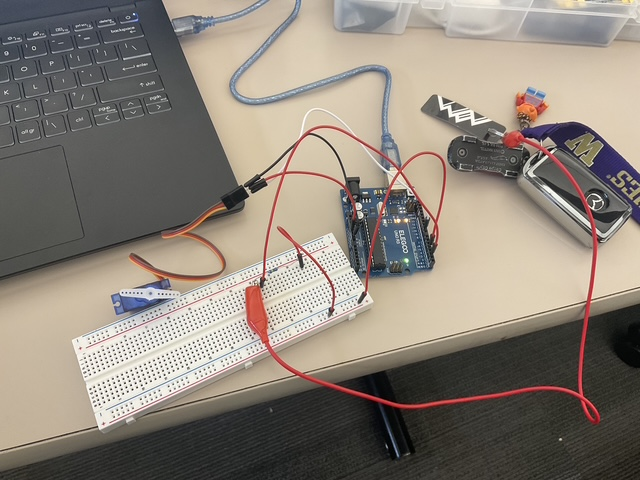

Here is the circuit design for assignment 2
This circuit utilizes a servo motor along with capacitive touch sensors. When touched through the capacitive touch sensors, the servo motor will rotate. When the capacitive touch sensors are not touched, the servo motor will not rotate. In this circuit, the capacitive touch sensors are connected to pins 2 and 4 and the servo motor is connected to pin 10. a 1 megaohm resistor (provided value inin class) is utilized as it would make the charge of the capacitive touch sensors more consistent with sensitivity.
Below is a GIF of the circuit operation:


Here is the schematic for the circuit.
Below is the code used for this assignment:
// Include the library
#include "Servo.h"
#include
CapacitiveSensor cs_4_2 = CapacitiveSensor(4,2); // 1 megohm resistor between pins 4 & 2, pin 2 is sensor pin, add wire, metal thing
// Create the servo object
Servo myservo;
// Setup section to run once
void setup() {
myservo.attach(9); // attach the servo to our servo object
myservo.write(90); // stop the motor
Serial.begin(9600); // serial communication
}
// Loop to keep the motor turning!
void loop() {
long start = millis(); // recording the time in milliseconds
long total1 = cs_4_2.capacitiveSensor(30); // reading the capacitive sensor (30 samples)
Serial.print(millis() - start); // check on performance in milliseconds
Serial.print("\t"); // tab character for debug window spacing
Serial.println(total1); // print sensor output 1
delay(10); // arbitrary delay to limit data to serial port
// if the reading is higher than 250 (there is touch)
if (total1 > 250) {
myservo.write(45); // rotate the motor counter-clockwise
delay(500);
myservo.write(90); // stop the motor
delay(500);
myservo.write(135); // rotate the motor clockwise
delay(500);
// else: it keeps the motor to fixed position
} else {
myservo.write(45); // rotate the motor counter-clockwise
}
}
1. Say you are using a servo motor you attach to pin 9. In your loop() you have the following code: for (int i=0, i < 180, i++){servo.write(i); delay(100);} Draw a graph with the X axis in seconds, for two seconds, and the y-axis the voltage at pin 9 with respect to ground.
2. Your input device is slightly broken, leading it to give us an erroneous reading 1% of the time. How can we address this? Answer in (pseudo)code.
Answer: Add a delay(10) in the loop or / add a list of values to the loop. Find the most common value in the list
3. Your input device is slightly noisy, leading the measurement to randomly deviate from the true measurement up or down by 10%. How can we address this? Answer in (pseudo)code.
Answer: You can reduce noise by averaging multiple recent sensor readings (moving average) or gradually updating the value with a weighted average (exponential smoothing). This helps smooth out random fluctuations and provides a more stable measurement. long total1 = cs_4_2.capacitiveSensor(100); // reading the capacitive sensor (100 samples)